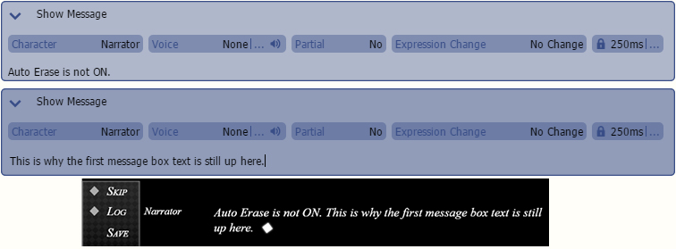

消息
The 消息命令允许您在场景中输入与对话相关的事件。
消息框是显示消息框中所有对话的地方。然而，消息框独立于消息文本。所以即使消息框隐藏了，消息文本仍然是可见的。使用 [消息可见性] 命令来显示/隐藏实际的消息文本。
ID- 要显示的对话框 UI 对象的 ID。默认情况下，它是“messageBox”，除非您在 Layouts > Layout_Game 中定义了其他消息框。可见
- 更改消息框的可见性。如果为“是”，则可见。如果为“否”，则隐藏。持续时间
- 消息框可见性的持续时间（毫秒）。继续
将立即使场景继续。等待
将使场景等待直到消息框可见性动画完成。效果
- 这些选项会影响消息框如何出现。缓动
设置消息框的缓动移动。更多信息请参阅缓动效果页面。动画
设置消息框的移动。移动
是消息框出现的起始点，它可以从左/上/右/下出现。混合
允许您淡入/淡出消息框。对于消息框的默认实现，这**没有效果**。遮罩允许您将消息框遮罩到遮罩文件。对于消息框的默认实现，这**没有效果**。模糊
遮罩边缘的平滑度。消息 可见性控制实际消息/对话的可见性。然而，消息文本独立于消息框。所以即使消息文本隐藏了，消息框仍然是可见的。使用 [消息框可见性] 命令来显示/隐藏消息框。可见
- 更改消息文本的可见性。如果为“是”，则可见。如果为“否”，则隐藏。持续时间
继续
将立即使场景继续。等待
将使场景等待直到消息文本可见性动画完成。效果
- 这些选项会影响消息文本如何出现。缓动
设置消息文本的缓动移动。更多信息请参阅缓动效果
页面。动画
设置消息文本的移动。移动是消息文本出现的起始点，它可以从左/上/右/下出现。混合
允许您淡入/淡出消息文本。遮罩
允许您将消息文本遮罩到遮罩文件。模糊
遮罩边缘的平滑度。消息 淡入/淡出
此命令影响消息的擦除速度。如果 [消息设置] 中的自动擦除关闭，则此命令无效。
持续时间- 消息结束的速度（毫秒）。
- 这些选项会影响消息如何淡出。缓动
设置消息框的缓动移动。更多信息请参阅缓动效果
页面。动画
设置消息框的移动。移动是消息框出现的起始点，它可以从左/上/右/下出现。混合
允许您淡入/淡出消息框。
Masking允许您将消息框遮罩到“Masks”文件。
Vague遮罩边缘的平滑度。
此命令更改消息框显示器的默认选项。
Auto Erase- 默认情况下，它是打开的。如果关闭，则不会清除前一个消息框中的文本。但是，您可以使用 [Clear Message] 命令手动清除当前消息文本。

Wait at End- 默认情况下，它是打开的。它在显示下一组消息之前等待用户输入。
如果将其关闭，将忽略输入并显示下一组。
Backlog- 指示是否将消息添加到日志中。
Font- 更改显示的字体。字体必须是 .WOFF 格式或系统中安装的字体。
Size- 字体大小。
Style- 设置消息文本样式。
Color- 文本颜色。
Bold- 使文本更粗。
Italic- 使文本倾斜。
Small Caps- 使小写字母显示为小写/大写字母。
Underline- 在文本下方绘制一条水平线，使其看起来带下划线。
Strikethrough- 在文本上方绘制一条水平居中线，使其看起来带删除线。
Line Height- 单条消息文本行的最小高度（以像素为单位）。您可以指定 0 以使用文本的自动计算高度。
Line Spacing- 消息文本行之间的间距（以像素为单位）。
Line Padding- 单条消息文本行的左侧和右侧内边距（以像素为单位）。
Outline- 为消息文本添加轮廓。
Outline- 为字体添加轮廓。设置为“是”表示有轮廓，设置为“否”则禁用。
Color- 控制轮廓颜色。使用红色、绿色和蓝色滑块（0 到 255）指定要闪烁的颜色。
您可以在对话框顶部预览区域中检查指定的颜色。使用“Power”指定颜色的不透明度（0 到 255）。将“Power”设置为“0”将使颜色完全透明，从而在屏幕上不可见。
Size- 轮廓的厚度（以像素为单位）。
Shadow- 为消息文本添加阴影。
Shadow- 设置为“是”表示打开阴影，设置为“否”则关闭。
Color
-控制阴影颜色。使用红色、绿色和蓝色滑块（0 到 255）指定要闪烁的颜色。
您可以在对话框顶部预览区域中检查指定的颜色。使用“Power”指定颜色的不透明度（0 到 255）。
将“Power”设置为“0”将使颜色完全透明，从而在屏幕上不可见。
Offset-X- 阴影的水平偏移量（以像素为单位）。值越高，阴影向右移动的距离越大。
Offset-Y- 阴影的垂直偏移量（以像素为单位）。值越高，阴影向下移动的距离越大。
此命令以冒险（ADV）游戏风格显示文本。如果箭头（）向下，则可以查看并输入要显示的文本。
Character- 您希望在场景中说话的角色。
Voice- 要为消息播放的语音文件。
Partial- 如果启用，它将允许在消息显示时激活其他场景命令。
Expression Change- 消息的角色表情。
Duration- 表情变化持续时间（以毫秒为单位）。
此命令向场景添加一个选择选项。
所有添加的选择在调用 [Show Choices] 命令之前都不会显示在屏幕上。因此，它可以与 [Condition] 命令结合使用以创建动态选择。
Description- 选择的内容。
On Select- 定义如果用户选择/单击该选项，应该发生什么。
Jump To- 选择后，跳转到指定的标签。
Call Common Event - 选择后，调用指定的通用事件。
Bind To- 选择后，将指定的开关设置为 ON。
Call Scene- 选择后，调用指定的（子）场景。请参阅 [Call Scene] 命令。
Position- 选择的位置。
Auto 是选择位置的默认选项。它始终居中显示，并从上到下排列。
Direct 允许用户自由地在屏幕上定位。
Default- 如果 [Choice Timer] 处于活动状态或游戏处于跳过模式，则将选择此命令已启用的选项。
Enabled- 指示选择是否启用。禁用的选择仍会显示，但用户无法选择。
此命令显示您设置的所有选项。
此命令以小说（NVL）游戏风格显示文本。如果箭头（）向下，则可以查看并输入要显示的文本。
Character- 您希望在场景中说话的角色。
Voice- 要为消息播放的语音文件。
关闭 NVL 消息显示。
此命令清除所有显示的消息。这会影响 ADV 和 NVL 模式。
显示一个窗口以输入值。然后将玩家输入的值分配给一个变量。
Digits- 要由玩家显示和/或输入的数字位数。最大为 8 位。
Store in Variable- 将玩家定义的输入存储到数字变量中。
显示一个窗口以输入值。然后将玩家输入的值分配给一个变量。您可以在 Database > System > Text-Input Letter-Set 中更改可用字母。
Letters- 要由玩家显示和/或输入的字母数量。最多为 12 个字母。
Store in Variable- 将玩家定义的输入存储到文本变量中。
创建消息可以显示的附加区域。如果需要同时显示多个消息框，可以使用此命令。例如漫画气泡。
Number- 消息区域的索引（ID）。这允许您确定要操作的区域。
Position- 屏幕上的消息区域位置和大小。
Template- 此区域使用的 UI 模板。默认是ui.CustomGameMessage，可以在 Script Editor 的 Layouts/Templates/Template_MessageBox 中找到。
请参阅 [Set Message Target] 以了解如何在消息区域显示消息。
更改消息区域的位置和大小。
Number- 消息区域的索引（ID）。这允许您确定要操作的区域。
Position- 屏幕上的消息区域位置和大小。
这允许您设置后续消息命令（例如 Show Message）的目标区域。
您可以通过使用 [Create Message Area] 命令创建的区域或 In-Game UI System 中的基于布局的消息区域来显示内容。Type
- 目标类型。Area
- 在使用 [Create Message Area] 命令创建的区域中显示文本。Number
- 您要操作的消息区域的索引（ID）。Layout-Based
- 通过 In-Game UI System 配置的消息区域。ID
- 通过 In Game UI System 配置的 ui.Message 对象的 ID。 Clear
- 指示新的目标消息区域是否应被清除。Erase Message Area
擦除一个消息区域。之后，该消息区域将无法再使用，所有指向该区域的消息命令将自动转发到默认消息区域。
Number
- 您要擦除的消息区域的索引（ID）。Choice Timer
为玩家的选择设置时间限制。如果玩家超时，将自动选择“Default”为“yes”的选项。
Min
表示分钟。Sec
表示秒。Backlog Visibility
Visible
- 如果启用，它将显示日志窗口。Background Visible
- 如果禁用，它将隐藏日志窗口背景图像。因此，您可以使用自定义背景图像。Message Box Defaults
Appear Duration
是入场动画的持续时间（以毫秒为单位）。Disappear Duration
是退场动画的持续时间（以毫秒为单位）。Appear Effects
Appear Effects - Easing
是入场动画使用的缓动设置。Appear Effects - Animation
是入场动画的动画设置。Disappear Effects
Disappear Effects - Easing
是退场动画使用的缓动设置。Disappear Effects - Animation
是退场动画的动画设置。Easing
设置消息框的缓动移动。有关更多信息，请参阅 Easing Effects页面。Animation
设置消息框的移动。Movement
是消息框的起点，它将从左/上/右/下出现。Blending
允许您淡入/淡出消息框。Masking
允许您将消息框遮罩到 Masks 文件。Vague
遮罩边缘的平滑度。Text Codes
文本代码是消息命令，它们在消息文本处理过程中应用函数，例如更改文本样式或显示变量的内容。<name> 中的元素是可选的。
Text Code
Function |
{N:index} |
显示角色名称。 |
{C:index} |
根据指定的颜色代码显示文本。 |
{SP:index} |
在消息期间播放音效。 |
{SZ:size} |
更改文本大小。 |
{Y:I} |
应用斜体文本样式。 |
{Y:B} |
应用粗体文本样式。 |
{Y:C} |
应用小写大写文本样式。 |
{Y:U} |
应用下划线文本样式。 |
{Y:S} |
应用删除线文本样式。 |
{Y:N} |
擦除消息中应用的所有样式。 |
{GN:<group>.index/name} |
显示全局数字变量的值。 |
{GT:<group>.index/name} |
显示全局文本变量的值。 |
{GS:<group>.index/name} |
显示全局开关的值。 |
{GL:<group>.index/name,elm} |
显示全局列表的值。 |
例如，{GL:1,0} <- 全局列表变量 1，索引为 0 的元素。 {LN:index} |
显示本地数字变量的值。 |
{LT:index} |
显示本地文本变量的值。 |
{LS:index} |
显示本地开关的值。 |
{LL:index,elm} |
显示本地列表的值。 |
例如，{LL:1,0} <- 本地列表变量 1，索引为 0 的元素。 {PN:<group>.index/name} |
显示持久化数字变量的值。 |
{PT:<group>.index/name} |
显示持久化文本变量的值。 |
{PS:<group>.index/name} |
显示持久化开关的值。 |
{PL:<group>.index/name,elm} |
显示持久化列表的值。 |
例如，{PL:1,0} <- 持久化列表变量 1，索引为 0 的元素。 {S:speed} |
根据设置的值调整消息速度。默认情况下，您可以输入以下值： |
0 - 最慢 1 - 慢 2 - 普通 3 - 快 4 - 最快 5 - 即时 您也可以使用负值使文本更慢。 {W:ms} |
等待几毫秒，然后继续其余的消息。 |
{WE:Y} |
Wait at End YES。 |
{WE:N} |
Wait at End NO。 |
{W:A} |
等待输入，如按键或按钮。 |
{DI:Y/N} |
立即显示文本。 |
Y = 立即绘制，N = 停止立即绘制。 {A:index} |
在消息框内显示动画。 |
{LK:index} |
将文本显示为可点击链接，并调用指定索引或名称的通用事件。 |
{LK:E} |
结束可点击链接格式。 |
{E:index/name} |
根据 Show Message 的设置角色更改角色的表情。 |
{M:name} |
执行用户定义的命令（在 |
Text Macro中）。{RT:rb/rt/id} |
显示 Ruby 文本。 |
"rb" 值是 Ruby 基本文本。 "rt" 是放置在 Ruby 基本文本上方的 Ruby 文本。 "id" 是可选的，指定 Ruby 文本使用的样式索引。默认情况下，使用脚本 "Style_Default" 中定义的样式 "rubyText"。如果 id 设置为某个值，该值将作为后缀添加到样式名称中，例如，如果 id 为 2，则为 "rubyText-2"。 {SLK:index/name,id} |
将文本显示为可样式化链接，并调用指定索引或名称的通用事件。与 LK 不同，它允许您为脚本中定义的链接应用自定义样式。 |
id 是可选的，指定要使用的样式索引。默认情况下，使用脚本 "Style_Default" 中定义的样式 "hyperlink"。如果 id 设置为某个值，该值将作为后缀添加到样式名称中，例如，如果 id 为 2，则为 "hyperlink-2"。 但是，可样式化链接的性能成本高于常规链接。此外，由于样式来自脚本中的样式定义，因此无法向可样式化链接添加其他任何样式文本代码。 {SLK:E} |
结束可样式化链接格式。 |
{CR:name} |
更改当前发言角色。 |
{P} |
如果 Auto Erase 为 ON，则擦除当前消息并开始一个新段落。 |
{CP} |
独立于 Auto Erase 清除当前消息并开始新消息。这在 NVL 模式下很有用。 |
HTML |